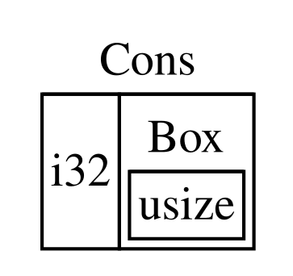

Choose which parts of application state are actually shared
Cloning the router state clones a path and an Arc handle. The path is ordinary independently owned data after the clone. The semaphore is a single shared object. If every request received a new semaphore initialised to four, each request would see four available permits and the process-wide limit would disappear. Arc buys shared lifetime; the semaphore supplies the concurrency semantics.
#[derive(Clone)]
struct App {
store: Store,
slots: Arc<Semaphore>,
}
Follow the owned permit into the blocking closure. Binding it to _slot retains it until the closure exits. The name begins with an underscore to silence an unused-variable warning, but it is a real binding. Writing let _ = slot instead would not provide the same scope-based ownership story. If the HTTP future is abandoned after scheduling, the blocking operation retains its permit until it finishes. A guard held only by the waiting caller would free capacity too early.
Follow destruction through an early return
Rust drops an owned guard when control leaves its scope through an ordinary return or through the question-mark operator. In the store, an error before commit drops the transaction object; rusqlite's default drop behaviour is to roll it back. The code therefore does not need an explicit rollback at every error branch. Commit still needs checking because completing the transaction can itself fail. Separately, dropping the final Arc to the semaphore frees its in-memory allocation. Neither kind of resource cleanup substitutes for application decisions about how long to retain an order in the database. Those are different lifetimes with different owners.
Download the order-intake Cargo project · doc.rust-lang.org/std/sync/struct.Arc.html · docs.rs/tokio/1/tokio/sync/struct.OwnedSemaphorePermit.html
Smart Pointers
A pointer is a general concept for a variable that contains an address in
memory. This address refers to, or “points at,” some other data. The most
common kind of pointer in Rust is a reference, which you learned about in
Chapter 4. References are indicated by the & symbol and borrow the value they
point to. They don’t have any special capabilities other than referring to
data, and they have no overhead.
Smart pointers, on the other hand, are data structures that act like a pointer but also have additional metadata and capabilities. The concept of smart pointers isn’t unique to Rust: Smart pointers originated in C++ and exist in other languages as well. Rust has a variety of smart pointers defined in the standard library that provide functionality beyond that provided by references. To explore the general concept, we’ll look at a couple of different examples of smart pointers, including a reference counting smart pointer type. This pointer enables you to allow data to have multiple owners by keeping track of the number of owners and, when no owners remain, cleaning up the data.
In Rust, with its concept of ownership and borrowing, there is an additional difference between references and smart pointers: While references only borrow data, in many cases smart pointers own the data they point to.
Smart pointers are usually implemented using structs. Unlike an ordinary
struct, smart pointers implement the Deref and Drop traits. The Deref
trait allows an instance of the smart pointer struct to behave like a reference
so that you can write your code to work with either references or smart
pointers. The Drop trait allows you to customize the code that’s run when an
instance of the smart pointer goes out of scope. In this chapter, we’ll discuss
both of these traits and demonstrate why they’re important to smart pointers.
Given that the smart pointer pattern is a general design pattern used frequently in Rust, this chapter won’t cover every existing smart pointer. Many libraries have their own smart pointers, and you can even write your own. We’ll cover the most common smart pointers in the standard library:
Box<T>, for allocating values on the heapRc<T>, a reference counting type that enables multiple ownershipRef<T>andRefMut<T>, accessed throughRefCell<T>, a type that enforces the borrowing rules at runtime instead of compile time
In addition, we’ll cover the interior mutability pattern where an immutable type exposes an API for mutating an interior value. We’ll also discuss reference cycles: how they can leak memory and how to prevent them.
Let’s dive in!
Using Box<T> to Point to Data on the Heap
Using Box<T> to Point to Data on the Heap
The most straightforward smart pointer is a box, whose type is written
Box<T>. Boxes allow you to store data on the heap rather than the stack.
What remains on the stack is the pointer to the heap data. Refer to Chapter 4
to review the difference between the stack and the heap.
Boxes don’t have performance overhead, other than storing their data on the heap instead of on the stack. But they don’t have many extra capabilities either. You’ll use them most often in these situations:
- When you have a type whose size can’t be known at compile time, and you want to use a value of that type in a context that requires an exact size
- When you have a large amount of data, and you want to transfer ownership but ensure that the data won’t be copied when you do so
- When you want to own a value, and you care only that it’s a type that implements a particular trait rather than being of a specific type
We’ll demonstrate the first situation in “Enabling Recursive Types with Boxes”. In the second case, transferring ownership of a large amount of data can take a long time because the data is copied around on the stack. To improve performance in this situation, we can store the large amount of data on the heap in a box. Then, only the small amount of pointer data is copied around on the stack, while the data it references stays in one place on the heap. The third case is known as a trait object, and “Using Trait Objects to Abstract over Shared Behavior” in Chapter 18 is devoted to that topic. So, what you learn here you’ll apply again in that section!
Storing Data on the Heap
Before we discuss the heap storage use case for Box<T>, we’ll cover the
syntax and how to interact with values stored within a Box<T>.
Listing 15-1 shows how to use a box to store an i32 value on the heap.
fn main() {
let b = Box::new(5);
println!("b = {b}");
}i32 value on the heap using a boxWe define the variable b to have the value of a Box that points to the
value 5, which is allocated on the heap. This program will print b = 5; in
this case, we can access the data in the box similarly to how we would if this
data were on the stack. Just like any owned value, when a box goes out of
scope, as b does at the end of main, it will be deallocated. The
deallocation happens both for the box (stored on the stack) and the data it
points to (stored on the heap).
Putting a single value on the heap isn’t very useful, so you won’t use boxes by
themselves in this way very often. Having values like a single i32 on the
stack, where they’re stored by default, is more appropriate in the majority of
situations. Let’s look at a case where boxes allow us to define types that we
wouldn’t be allowed to define if we didn’t have boxes.
Enabling Recursive Types with Boxes
A value of a recursive type can have another value of the same type as part of itself. Recursive types pose an issue because Rust needs to know at compile time how much space a type takes up. However, the nesting of values of recursive types could theoretically continue infinitely, so Rust can’t know how much space the value needs. Because boxes have a known size, we can enable recursive types by inserting a box in the recursive type definition.
As an example of a recursive type, let’s explore the cons list. This is a data type commonly found in functional programming languages. The cons list type we’ll define is straightforward except for the recursion; therefore, the concepts in the example we’ll work with will be useful anytime you get into more complex situations involving recursive types.
Understanding the Cons List
A cons list is a data structure that comes from the Lisp programming language
and its dialects, is made up of nested pairs, and is the Lisp version of a
linked list. Its name comes from the cons function (short for construct
function) in Lisp that constructs a new pair from its two arguments. By
calling cons on a pair consisting of a value and another pair, we can
construct cons lists made up of recursive pairs.
For example, here’s a pseudocode representation of a cons list containing the
list 1, 2, 3 with each pair in parentheses:
(1, (2, (3, Nil)))
Each item in a cons list contains two elements: the value of the current item
and of the next item. The last item in the list contains only a value called
Nil without a next item. A cons list is produced by recursively calling the
cons function. The canonical name to denote the base case of the recursion is
Nil. Note that this is not the same as the “null” or “nil” concept discussed
in Chapter 6, which is an invalid or absent value.
The cons list isn’t a commonly used data structure in Rust. Most of the time
when you have a list of items in Rust, Vec<T> is a better choice to use.
Other, more complex recursive data types are useful in various situations,
but by starting with the cons list in this chapter, we can explore how boxes
let us define a recursive data type without much distraction.
Listing 15-2 contains an enum definition for a cons list. Note that this code
won’t compile yet, because the List type doesn’t have a known size, which
we’ll demonstrate.
enum List {
Cons(i32, List),
Nil,
}
fn main() {}i32 valuesNote: We’re implementing a cons list that holds only i32 values for the
purposes of this example. We could have implemented it using generics, as we
discussed in Chapter 10, to define a cons list type that could store values of
any type.
Using the List type to store the list 1, 2, 3 would look like the code in
Listing 15-3.
enum List {
Cons(i32, List),
Nil,
}
// --snip--
use crate::List::{Cons, Nil};
fn main() {
let list = Cons(1, Cons(2, Cons(3, Nil)));
}List enum to store the list 1, 2, 3The first Cons value holds 1 and another List value. This List value is
another Cons value that holds 2 and another List value. This List value
is one more Cons value that holds 3 and a List value, which is finally
Nil, the non-recursive variant that signals the end of the list.
If we try to compile the code in Listing 15-3, we get the error shown in Listing 15-4.
$ cargo run
Compiling cons-list v0.1.0 (file:///projects/cons-list)
error[E0072]: recursive type `List` has infinite size
--> src/main.rs:1:1
|
1 | enum List {
| ^^^^^^^^^
2 | Cons(i32, List),
| ---- recursive without indirection
|
help: insert some indirection (e.g., a `Box`, `Rc`, or `&`) to break the cycle
|
2 | Cons(i32, Box<List>),
| ++++ +
For more information about this error, try `rustc --explain E0072`.
error: could not compile `cons-list` (bin "cons-list") due to 1 previous error
The error shows this type “has infinite size.” The reason is that we’ve defined
List with a variant that is recursive: It holds another value of itself
directly. As a result, Rust can’t figure out how much space it needs to store a
List value. Let’s break down why we get this error. First, we’ll look at how
Rust decides how much space it needs to store a value of a non-recursive type.
Computing the Size of a Non-Recursive Type
Recall the Message enum we defined in Listing 6-2 when we discussed enum
definitions in Chapter 6:
enum Message {
Quit,
Move { x: i32, y: i32 },
Write(String),
ChangeColor(i32, i32, i32),
}
fn main() {}To determine how much space to allocate for a Message value, Rust goes
through each of the variants to see which variant needs the most space. Rust
sees that Message::Quit doesn’t need any space, Message::Move needs enough
space to store two i32 values, and so forth. Because only one variant will be
used, the most space a Message value will need is the space it would take to
store the largest of its variants.
Contrast this with what happens when Rust tries to determine how much space a
recursive type like the List enum in Listing 15-2 needs. The compiler starts
by looking at the Cons variant, which holds a value of type i32 and a value
of type List. Therefore, Cons needs an amount of space equal to the size of
an i32 plus the size of a List. To figure out how much memory the List
type needs, the compiler looks at the variants, starting with the Cons
variant. The Cons variant holds a value of type i32 and a value of type
List, and this process continues infinitely, as shown in Figure 15-1.

Figure 15-1: An infinite List consisting of infinite
Cons variants
Getting a Recursive Type with a Known Size
Because Rust can’t figure out how much space to allocate for recursively defined types, the compiler gives an error with this helpful suggestion:
help: insert some indirection (e.g., a `Box`, `Rc`, or `&`) to break the cycle
|
2 | Cons(i32, Box<List>),
| ++++ +
In this suggestion, indirection means that instead of storing a value directly, we should change the data structure to store the value indirectly by storing a pointer to the value instead.
Because a Box<T> is a pointer, Rust always knows how much space a Box<T>
needs: A pointer’s size doesn’t change based on the amount of data it’s
pointing to. This means we can put a Box<T> inside the Cons variant instead
of another List value directly. The Box<T> will point to the next List
value that will be on the heap rather than inside the Cons variant.
Conceptually, we still have a list, created with lists holding other lists, but
this implementation is now more like placing the items next to one another
rather than inside one another.
We can change the definition of the List enum in Listing 15-2 and the usage
of the List in Listing 15-3 to the code in Listing 15-5, which will compile.
enum List {
Cons(i32, Box<List>),
Nil,
}
use crate::List::{Cons, Nil};
fn main() {
let list = Cons(1, Box::new(Cons(2, Box::new(Cons(3, Box::new(Nil))))));
}List that uses Box<T> in order to have a known sizeThe Cons variant needs the size of an i32 plus the space to store the box’s
pointer data. The Nil variant stores no values, so it needs less space on the
stack than the Cons variant. We now know that any List value will take up
the size of an i32 plus the size of a box’s pointer data. By using a box,
we’ve broken the infinite, recursive chain, so the compiler can figure out the
size it needs to store a List value. Figure 15-2 shows what the Cons
variant looks like now.

Figure 15-2: A List that is not infinitely sized,
because Cons holds a Box
Boxes provide only the indirection and heap allocation; they don’t have any other special capabilities, like those we’ll see with the other smart pointer types. They also don’t have the performance overhead that these special capabilities incur, so they can be useful in cases like the cons list where the indirection is the only feature we need. We’ll look at more use cases for boxes in Chapter 18.
The Box<T> type is a smart pointer because it implements the Deref trait,
which allows Box<T> values to be treated like references. When a Box<T>
value goes out of scope, the heap data that the box is pointing to is cleaned
up as well because of the Drop trait implementation. These two traits will be
even more important to the functionality provided by the other smart pointer
types we’ll discuss in the rest of this chapter. Let’s explore these two traits
in more detail.
Treating Smart Pointers Like Regular References
Treating Smart Pointers Like Regular References
Implementing the Deref trait allows you to customize the behavior of the
dereference operator * (not to be confused with the multiplication or glob
operator). By implementing Deref in such a way that a smart pointer can be
treated like a regular reference, you can write code that operates on
references and use that code with smart pointers too.
Let’s first look at how the dereference operator works with regular references.
Then, we’ll try to define a custom type that behaves like Box<T> and see why
the dereference operator doesn’t work like a reference on our newly defined
type. We’ll explore how implementing the Deref trait makes it possible for
smart pointers to work in ways similar to references. Then, we’ll look at
Rust’s deref coercion feature and how it lets us work with either references or
smart pointers.
Following the Reference to the Value
A regular reference is a type of pointer, and one way to think of a pointer is
as an arrow to a value stored somewhere else. In Listing 15-6, we create a
reference to an i32 value and then use the dereference operator to follow the
reference to the value.
fn main() {
let x = 5;
let y = &x;
assert_eq!(5, x);
assert_eq!(5, *y);
}i32 valueThe variable x holds an i32 value 5. We set y equal to a reference to
x. We can assert that x is equal to 5. However, if we want to make an
assertion about the value in y, we have to use *y to follow the reference
to the value it’s pointing to (hence, dereference) so that the compiler can
compare the actual value. Once we dereference y, we have access to the
integer value y is pointing to that we can compare with 5.
If we tried to write assert_eq!(5, y); instead, we would get this compilation
error:
$ cargo run
Compiling deref-example v0.1.0 (file:///projects/deref-example)
error[E0277]: can't compare `{integer}` with `&{integer}`
--> src/main.rs:6:5
|
6 | assert_eq!(5, y);
| ^^^^^^^^^^^^^^^^ no implementation for `{integer} == &{integer}`
|
= help: the trait `PartialEq<&{integer}>` is not implemented for `{integer}`
= help: the following other types implement trait `PartialEq<Rhs>`:
f128
f16
f32
f64
i128
i16
i32
i64
and 8 others
For more information about this error, try `rustc --explain E0277`.
error: could not compile `deref-example` (bin "deref-example") due to 1 previous error
Comparing a number and a reference to a number isn’t allowed because they’re different types. We must use the dereference operator to follow the reference to the value it’s pointing to.
Using Box<T> Like a Reference
We can rewrite the code in Listing 15-6 to use a Box<T> instead of a
reference; the dereference operator used on the Box<T> in Listing 15-7
functions in the same way as the dereference operator used on the reference in
Listing 15-6.
fn main() {
let x = 5;
let y = Box::new(x);
assert_eq!(5, x);
assert_eq!(5, *y);
}Box<i32>The main difference between Listing 15-7 and Listing 15-6 is that here we set
y to be an instance of a box pointing to a copied value of x rather than a
reference pointing to the value of x. In the last assertion, we can use the
dereference operator to follow the box’s pointer in the same way that we did
when y was a reference. Next, we’ll explore what is special about Box<T>
that enables us to use the dereference operator by defining our own box type.
Defining Our Own Smart Pointer
Let’s build a wrapper type similar to the Box<T> type provided by the
standard library to experience how smart pointer types behave differently from
references by default. Then, we’ll look at how to add the ability to use the
dereference operator.
Note: There’s one big difference between the MyBox<T> type we’re about to
build and the real Box<T>: Our version will not store its data on the heap.
We are focusing this example on Deref, so where the data is actually stored
is less important than the pointer-like behavior.
The Box<T> type is ultimately defined as a tuple struct with one element, so
Listing 15-8 defines a MyBox<T> type in the same way. We’ll also define a
new function to match the new function defined on Box<T>.
struct MyBox<T>(T);
impl<T> MyBox<T> {
fn new(x: T) -> MyBox<T> {
MyBox(x)
}
}
fn main() {}MyBox<T> typeWe define a struct named MyBox and declare a generic parameter T because we
want our type to hold values of any type. The MyBox type is a tuple struct
with one element of type T. The MyBox::new function takes one parameter of
type T and returns a MyBox instance that holds the value passed in.
Let’s try adding the main function in Listing 15-7 to Listing 15-8 and
changing it to use the MyBox<T> type we’ve defined instead of Box<T>. The
code in Listing 15-9 won’t compile, because Rust doesn’t know how to
dereference MyBox.
struct MyBox<T>(T);
impl<T> MyBox<T> {
fn new(x: T) -> MyBox<T> {
MyBox(x)
}
}
fn main() {
let x = 5;
let y = MyBox::new(x);
assert_eq!(5, x);
assert_eq!(5, *y);
}MyBox<T> in the same way we used references and Box<T>Here’s the resultant compilation error:
$ cargo run
Compiling deref-example v0.1.0 (file:///projects/deref-example)
error[E0614]: type `MyBox<{integer}>` cannot be dereferenced
--> src/main.rs:14:19
|
14 | assert_eq!(5, *y);
| ^^ can't be dereferenced
For more information about this error, try `rustc --explain E0614`.
error: could not compile `deref-example` (bin "deref-example") due to 1 previous error
Our MyBox<T> type can’t be dereferenced because we haven’t implemented that
ability on our type. To enable dereferencing with the * operator, we
implement the Deref trait.
Implementing the Deref Trait
As discussed in “Implementing a Trait on a Type” in
Chapter 10, to implement a trait we need to provide implementations for the
trait’s required methods. The Deref trait, provided by the standard library,
requires us to implement one method named deref that borrows self and
returns a reference to the inner data. Listing 15-10 contains an implementation
of Deref to add to the definition of MyBox<T>.
use std::ops::Deref;
impl<T> Deref for MyBox<T> {
type Target = T;
fn deref(&self) -> &Self::Target {
&self.0
}
}
struct MyBox<T>(T);
impl<T> MyBox<T> {
fn new(x: T) -> MyBox<T> {
MyBox(x)
}
}
fn main() {
let x = 5;
let y = MyBox::new(x);
assert_eq!(5, x);
assert_eq!(5, *y);
}Deref on MyBox<T>The type Target = T; syntax defines an associated type for the Deref trait
to use. Associated types are a slightly different way of declaring a generic
parameter, but you don’t need to worry about them for now; we’ll cover them in
more detail in Chapter 20.
We fill in the body of the deref method with &self.0 so that deref
returns a reference to the value we want to access with the * operator;
recall from “Creating Different Types with Tuple Structs” in Chapter 5 that .0 accesses the first value in a tuple struct.
The main function in Listing 15-9 that calls * on the MyBox<T> value now
compiles, and the assertions pass!
Without the Deref trait, the compiler can only dereference & references.
The deref method gives the compiler the ability to take a value of any type
that implements Deref and call the deref method to get a reference that
it knows how to dereference.
When we entered *y in Listing 15-9, behind the scenes Rust actually ran this
code:
*(y.deref())Rust substitutes the * operator with a call to the deref method and then a
plain dereference so that we don’t have to think about whether or not we need
to call the deref method. This Rust feature lets us write code that functions
identically whether we have a regular reference or a type that implements
Deref.
The reason the deref method returns a reference to a value, and that the
plain dereference outside the parentheses in *(y.deref()) is still necessary,
has to do with the ownership system. If the deref method returned the value
directly instead of a reference to the value, the value would be moved out of
self. We don’t want to take ownership of the inner value inside MyBox<T> in
this case or in most cases where we use the dereference operator.
Note that the * operator is replaced with a call to the deref method and
then a call to the * operator just once, each time we use a * in our code.
Because the substitution of the * operator does not recurse infinitely, we
end up with data of type i32, which matches the 5 in assert_eq! in
Listing 15-9.
Using Deref Coercion in Functions and Methods
Deref coercion converts a reference to a type that implements the Deref
trait into a reference to another type. For example, deref coercion can convert
&String to &str because String implements the Deref trait such that it
returns &str. Deref coercion is a convenience Rust performs on arguments to
functions and methods, and it works only on types that implement the Deref
trait. It happens automatically when we pass a reference to a particular type’s
value as an argument to a function or method that doesn’t match the parameter
type in the function or method definition. A sequence of calls to the deref
method converts the type we provided into the type the parameter needs.
Deref coercion was added to Rust so that programmers writing function and
method calls don’t need to add as many explicit references and dereferences
with & and *. The deref coercion feature also lets us write more code that
can work for either references or smart pointers.
To see deref coercion in action, let’s use the MyBox<T> type we defined in
Listing 15-8 as well as the implementation of Deref that we added in Listing
15-10. Listing 15-11 shows the definition of a function that has a string slice
parameter.
fn hello(name: &str) {
println!("Hello, {name}!");
}
fn main() {}hello function that has the parameter name of type &strWe can call the hello function with a string slice as an argument, such as
hello("Rust");, for example. Deref coercion makes it possible to call hello
with a reference to a value of type MyBox<String>, as shown in Listing 15-12.
use std::ops::Deref;
impl<T> Deref for MyBox<T> {
type Target = T;
fn deref(&self) -> &T {
&self.0
}
}
struct MyBox<T>(T);
impl<T> MyBox<T> {
fn new(x: T) -> MyBox<T> {
MyBox(x)
}
}
fn hello(name: &str) {
println!("Hello, {name}!");
}
fn main() {
let m = MyBox::new(String::from("Rust"));
hello(&m);
}hello with a reference to a MyBox<String> value, which works because of deref coercionHere we’re calling the hello function with the argument &m, which is a
reference to a MyBox<String> value. Because we implemented the Deref trait
on MyBox<T> in Listing 15-10, Rust can turn &MyBox<String> into &String
by calling deref. The standard library provides an implementation of Deref
on String that returns a string slice, and this is in the API documentation
for Deref. Rust calls deref again to turn the &String into &str, which
matches the hello function’s definition.
If Rust didn’t implement deref coercion, we would have to write the code in
Listing 15-13 instead of the code in Listing 15-12 to call hello with a value
of type &MyBox<String>.
use std::ops::Deref;
impl<T> Deref for MyBox<T> {
type Target = T;
fn deref(&self) -> &T {
&self.0
}
}
struct MyBox<T>(T);
impl<T> MyBox<T> {
fn new(x: T) -> MyBox<T> {
MyBox(x)
}
}
fn hello(name: &str) {
println!("Hello, {name}!");
}
fn main() {
let m = MyBox::new(String::from("Rust"));
hello(&(*m)[..]);
}The (*m) dereferences the MyBox<String> into a String. Then, the & and
[..] take a string slice of the String that is equal to the whole string to
match the signature of hello. This code without deref coercions is harder to
read, write, and understand with all of these symbols involved. Deref coercion
allows Rust to handle these conversions for us automatically.
When the Deref trait is defined for the types involved, Rust will analyze the
types and use Deref::deref as many times as necessary to get a reference to
match the parameter’s type. The number of times that Deref::deref needs to be
inserted is resolved at compile time, so there is no runtime penalty for taking
advantage of deref coercion!
Handling Deref Coercion with Mutable References
Similar to how you use the Deref trait to override the * operator on
immutable references, you can use the DerefMut trait to override the *
operator on mutable references.
Rust does deref coercion when it finds types and trait implementations in three cases:
- From
&Tto&UwhenT: Deref<Target=U> - From
&mut Tto&mut UwhenT: DerefMut<Target=U> - From
&mut Tto&UwhenT: Deref<Target=U>
The first two cases are the same except that the second implements mutability.
The first case states that if you have a &T, and T implements Deref to
some type U, you can get a &U transparently. The second case states that
the same deref coercion happens for mutable references.
The third case is trickier: Rust will also coerce a mutable reference to an immutable one. But the reverse is not possible: Immutable references will never coerce to mutable references. Because of the borrowing rules, if you have a mutable reference, that mutable reference must be the only reference to that data (otherwise, the program wouldn’t compile). Converting one mutable reference to one immutable reference will never break the borrowing rules. Converting an immutable reference to a mutable reference would require that the initial immutable reference is the only immutable reference to that data, but the borrowing rules don’t guarantee that. Therefore, Rust can’t make the assumption that converting an immutable reference to a mutable reference is possible.
Running Code on Cleanup with the Drop Trait
Running Code on Cleanup with the Drop Trait
The second trait important to the smart pointer pattern is Drop, which lets
you customize what happens when a value is about to go out of scope. You can
provide an implementation for the Drop trait on any type, and that code can
be used to release resources like files or network connections.
We’re introducing Drop in the context of smart pointers because the
functionality of the Drop trait is almost always used when implementing a
smart pointer. For example, when a Box<T> is dropped, it will deallocate the
space on the heap that the box points to.
In some languages, for some types, the programmer must call code to free memory or resources every time they finish using an instance of those types. Examples include file handles, sockets, and locks. If the programmer forgets, the system might become overloaded and crash. In Rust, you can specify that a particular bit of code be run whenever a value goes out of scope, and the compiler will insert this code automatically. As a result, you don’t need to be careful about placing cleanup code everywhere in a program that an instance of a particular type is finished with—you still won’t leak resources!
You specify the code to run when a value goes out of scope by implementing the
Drop trait. The Drop trait requires you to implement one method named
drop that takes a mutable reference to self. To see when Rust calls drop,
let’s implement drop with println! statements for now.
Listing 15-14 shows a CustomSmartPointer struct whose only custom
functionality is that it will print Dropping CustomSmartPointer! when the
instance goes out of scope, to show when Rust runs the drop method.
struct CustomSmartPointer {
data: String,
}
impl Drop for CustomSmartPointer {
fn drop(&mut self) {
println!("Dropping CustomSmartPointer with data `{}`!", self.data);
}
}
fn main() {
let c = CustomSmartPointer {
data: String::from("my stuff"),
};
let d = CustomSmartPointer {
data: String::from("other stuff"),
};
println!("CustomSmartPointers created");
}CustomSmartPointer struct that implements the Drop trait where we would put our cleanup codeThe Drop trait is included in the prelude, so we don’t need to bring it into
scope. We implement the Drop trait on CustomSmartPointer and provide an
implementation for the drop method that calls println!. The body of the
drop method is where you would place any logic that you wanted to run when an
instance of your type goes out of scope. We’re printing some text here to
demonstrate visually when Rust will call drop.
In main, we create two instances of CustomSmartPointer and then print
CustomSmartPointers created. At the end of main, our instances of
CustomSmartPointer will go out of scope, and Rust will call the code we put
in the drop method, printing our final message. Note that we didn’t need to
call the drop method explicitly.
When we run this program, we’ll see the following output:
$ cargo run
Compiling drop-example v0.1.0 (file:///projects/drop-example)
Finished `dev` profile [unoptimized + debuginfo] target(s) in 0.60s
Running `target/debug/drop-example`
CustomSmartPointers created
Dropping CustomSmartPointer with data `other stuff`!
Dropping CustomSmartPointer with data `my stuff`!
Rust automatically called drop for us when our instances went out of scope,
calling the code we specified. Variables are dropped in the reverse order of
their creation, so d was dropped before c. This example’s purpose is to
give you a visual guide to how the drop method works; usually you would
specify the cleanup code that your type needs to run rather than a print
message.
Unfortunately, it’s not straightforward to disable the automatic drop
functionality. Disabling drop isn’t usually necessary; the whole point of the
Drop trait is that it’s taken care of automatically. Occasionally, however,
you might want to clean up a value early. One example is when using smart
pointers that manage locks: You might want to force the drop method that
releases the lock so that other code in the same scope can acquire the lock.
Rust doesn’t let you call the Drop trait’s drop method manually; instead,
you have to call the std::mem::drop function provided by the standard library
if you want to force a value to be dropped before the end of its scope.
Trying to call the Drop trait’s drop method manually by modifying the
main function from Listing 15-14 won’t work, as shown in Listing 15-15.
struct CustomSmartPointer {
data: String,
}
impl Drop for CustomSmartPointer {
fn drop(&mut self) {
println!("Dropping CustomSmartPointer with data `{}`!", self.data);
}
}
fn main() {
let c = CustomSmartPointer {
data: String::from("some data"),
};
println!("CustomSmartPointer created");
c.drop();
println!("CustomSmartPointer dropped before the end of main");
}drop method from the Drop trait manually to clean up earlyWhen we try to compile this code, we’ll get this error:
$ cargo run
Compiling drop-example v0.1.0 (file:///projects/drop-example)
error[E0040]: explicit use of destructor method
--> src/main.rs:16:7
|
16 | c.drop();
| ^^^^ explicit destructor calls not allowed
|
help: consider using `drop` function
|
16 - c.drop();
16 + drop(c);
|
For more information about this error, try `rustc --explain E0040`.
error: could not compile `drop-example` (bin "drop-example") due to 1 previous error
This error message states that we’re not allowed to explicitly call drop. The
error message uses the term destructor, which is the general programming term
for a function that cleans up an instance. A destructor is analogous to a
constructor, which creates an instance. The drop function in Rust is one
particular destructor.
Rust doesn’t let us call drop explicitly, because Rust would still
automatically call drop on the value at the end of main. This would cause a
double free error because Rust would be trying to clean up the same value twice.
We can’t disable the automatic insertion of drop when a value goes out of
scope, and we can’t call the drop method explicitly. So, if we need to force
a value to be cleaned up early, we use the std::mem::drop function.
The std::mem::drop function is different from the drop method in the Drop
trait. We call it by passing as an argument the value we want to force-drop.
The function is in the prelude, so we can modify main in Listing 15-15 to
call the drop function, as shown in Listing 15-16.
struct CustomSmartPointer {
data: String,
}
impl Drop for CustomSmartPointer {
fn drop(&mut self) {
println!("Dropping CustomSmartPointer with data `{}`!", self.data);
}
}
fn main() {
let c = CustomSmartPointer {
data: String::from("some data"),
};
println!("CustomSmartPointer created");
drop(c);
println!("CustomSmartPointer dropped before the end of main");
}std::mem::drop to explicitly drop a value before it goes out of scopeRunning this code will print the following:
$ cargo run
Compiling drop-example v0.1.0 (file:///projects/drop-example)
Finished `dev` profile [unoptimized + debuginfo] target(s) in 0.73s
Running `target/debug/drop-example`
CustomSmartPointer created
Dropping CustomSmartPointer with data `some data`!
CustomSmartPointer dropped before the end of main
The text Dropping CustomSmartPointer with data `some data`! is printed
between the CustomSmartPointer created and CustomSmartPointer dropped before the end of main text, showing that the drop method code is called to drop
c at that point.
You can use code specified in a Drop trait implementation in many ways to
make cleanup convenient and safe: For instance, you could use it to create your
own memory allocator! With the Drop trait and Rust’s ownership system, you
don’t have to remember to clean up, because Rust does it automatically.
You also don’t have to worry about problems resulting from accidentally
cleaning up values still in use: The ownership system that makes sure
references are always valid also ensures that drop gets called only once when
the value is no longer being used.
Now that we’ve examined Box<T> and some of the characteristics of smart
pointers, let’s look at a few other smart pointers defined in the standard
library.
Rc<T>, the Reference Counted Smart Pointer
Rc<T>, the Reference-Counted Smart Pointer
In the majority of cases, ownership is clear: You know exactly which variable owns a given value. However, there are cases when a single value might have multiple owners. For example, in graph data structures, multiple edges might point to the same node, and that node is conceptually owned by all of the edges that point to it. A node shouldn’t be cleaned up unless it doesn’t have any edges pointing to it and so has no owners.
You have to enable multiple ownership explicitly by using the Rust type
Rc<T>, which is an abbreviation for reference counting. The Rc<T> type
keeps track of the number of references to a value to determine whether or not
the value is still in use. If there are zero references to a value, the value
can be cleaned up without any references becoming invalid.
Imagine Rc<T> as a TV in a family room. When one person enters to watch TV,
they turn it on. Others can come into the room and watch the TV. When the last
person leaves the room, they turn off the TV because it’s no longer being used.
If someone turns off the TV while others are still watching it, there would be
an uproar from the remaining TV watchers!
We use the Rc<T> type when we want to allocate some data on the heap for
multiple parts of our program to read and we can’t determine at compile time
which part will finish using the data last. If we knew which part would finish
last, we could just make that part the data’s owner, and the normal ownership
rules enforced at compile time would take effect.
Note that Rc<T> is only for use in single-threaded scenarios. When we discuss
concurrency in Chapter 16, we’ll cover how to do reference counting in
multithreaded programs.
Sharing Data
Let’s return to our cons list example in Listing 15-5. Recall that we defined
it using Box<T>. This time, we’ll create two lists that both share ownership
of a third list. Conceptually, this looks similar to Figure 15-3.
![A linked list with the label 'a' pointing to three elements. The first element contains the integer 5 and points to the second element. Th
e second element contains the integer 10 and points to the third element. The third element contains the value 'Nil' that signifies the end of the l
ist; it does not point anywhere. A linked list with the label 'b' points to an element that contains the integer 3 and points to the first element o
f list 'a'. A linked list with the label 'c' points to an element that contains the integer 4 and also points to the first element of list 'a' so th
at the tails of lists 'b' and 'c' are both list 'a'.](assets/trpl15-03.svg)
Figure 15-3: Two lists, b and c, sharing ownership of
a third list, a
We’ll create list a that contains 5 and then 10. Then, we’ll make two
more lists: b that starts with 3 and c that starts with 4. Both the b
and c lists will then continue on to the first a list containing 5 and
10. In other words, both lists will share the first list containing 5 and
10.
Trying to implement this scenario using our definition of List with Box<T>
won’t work, as shown in Listing 15-17.
enum List {
Cons(i32, Box<List>),
Nil,
}
use crate::List::{Cons, Nil};
fn main() {
let a = Cons(5, Box::new(Cons(10, Box::new(Nil))));
let b = Cons(3, Box::new(a));
let c = Cons(4, Box::new(a));
}Box<T> that try to share ownership of a third listWhen we compile this code, we get this error:
$ cargo run
Compiling cons-list v0.1.0 (file:///projects/cons-list)
error[E0382]: use of moved value: `a`
--> src/main.rs:11:30
|
9 | let a = Cons(5, Box::new(Cons(10, Box::new(Nil))));
| - move occurs because `a` has type `List`, which does not implement the `Copy` trait
10 | let b = Cons(3, Box::new(a));
| - value moved here
11 | let c = Cons(4, Box::new(a));
| ^ value used here after move
|
note: if `List` implemented `Clone`, you could clone the value
--> src/main.rs:1:1
|
1 | enum List {
| ^^^^^^^^^ consider implementing `Clone` for this type
...
10 | let b = Cons(3, Box::new(a));
| - you could clone this value
For more information about this error, try `rustc --explain E0382`.
error: could not compile `cons-list` (bin "cons-list") due to 1 previous error
The Cons variants own the data they hold, so when we create the b list, a
is moved into b and b owns a. Then, when we try to use a again when
creating c, we’re not allowed to because a has been moved.
We could change the definition of Cons to hold references instead, but then
we would have to specify lifetime parameters. By specifying lifetime
parameters, we would be specifying that every element in the list will live at
least as long as the entire list. This is the case for the elements and lists
in Listing 15-17, but not in every scenario.
Instead, we’ll change our definition of List to use Rc<T> in place of
Box<T>, as shown in Listing 15-18. Each Cons variant will now hold a value
and an Rc<T> pointing to a List. When we create b, instead of taking
ownership of a, we’ll clone the Rc<List> that a is holding, thereby
increasing the number of references from one to two and letting a and b
share ownership of the data in that Rc<List>. We’ll also clone a when
creating c, increasing the number of references from two to three. Every time
we call Rc::clone, the reference count to the data within the Rc<List> will
increase, and the data won’t be cleaned up unless there are zero references to
it.
enum List {
Cons(i32, Rc<List>),
Nil,
}
use crate::List::{Cons, Nil};
use std::rc::Rc;
fn main() {
let a = Rc::new(Cons(5, Rc::new(Cons(10, Rc::new(Nil)))));
let b = Cons(3, Rc::clone(&a));
let c = Cons(4, Rc::clone(&a));
}List that uses Rc<T>We need to add a use statement to bring Rc<T> into scope because it’s not
in the prelude. In main, we create the list holding 5 and 10 and store it
in a new Rc<List> in a. Then, when we create b and c, we call the
Rc::clone function and pass a reference to the Rc<List> in a as an
argument.
We could have called a.clone() rather than Rc::clone(&a), but Rust’s
convention is to use Rc::clone in this case. The implementation of
Rc::clone doesn’t make a deep copy of all the data like most types’
implementations of clone do. The call to Rc::clone only increments the
reference count, which doesn’t take much time. Deep copies of data can take a
lot of time. By using Rc::clone for reference counting, we can visually
distinguish between the deep-copy kinds of clones and the kinds of clones that
increase the reference count. When looking for performance problems in the
code, we only need to consider the deep-copy clones and can disregard calls to
Rc::clone.
Cloning to Increase the Reference Count
Let’s change our working example in Listing 15-18 so that we can see the
reference counts changing as we create and drop references to the Rc<List> in
a.
In Listing 15-19, we’ll change main so that it has an inner scope around list
c; then, we can see how the reference count changes when c goes out of
scope.
enum List {
Cons(i32, Rc<List>),
Nil,
}
use crate::List::{Cons, Nil};
use std::rc::Rc;
// --snip--
fn main() {
let a = Rc::new(Cons(5, Rc::new(Cons(10, Rc::new(Nil)))));
println!("count after creating a = {}", Rc::strong_count(&a));
let b = Cons(3, Rc::clone(&a));
println!("count after creating b = {}", Rc::strong_count(&a));
{
let c = Cons(4, Rc::clone(&a));
println!("count after creating c = {}", Rc::strong_count(&a));
}
println!("count after c goes out of scope = {}", Rc::strong_count(&a));
}At each point in the program where the reference count changes, we print the
reference count, which we get by calling the Rc::strong_count function. This
function is named strong_count rather than count because the Rc<T> type
also has a weak_count; we’ll see what weak_count is used for in “Preventing
Reference Cycles Using Weak<T>”.
This code prints the following:
$ cargo run
Compiling cons-list v0.1.0 (file:///projects/cons-list)
Finished `dev` profile [unoptimized + debuginfo] target(s) in 0.45s
Running `target/debug/cons-list`
count after creating a = 1
count after creating b = 2
count after creating c = 3
count after c goes out of scope = 2
We can see that the Rc<List> in a has an initial reference count of 1;
then, each time we call clone, the count goes up by 1. When c goes out of
scope, the count goes down by 1. We don’t have to call a function to decrease
the reference count like we have to call Rc::clone to increase the reference
count: The implementation of the Drop trait decreases the reference count
automatically when an Rc<T> value goes out of scope.
What we can’t see in this example is that when b and then a go out of scope
at the end of main, the count is 0, and the Rc<List> is cleaned up
completely. Using Rc<T> allows a single value to have multiple owners, and
the count ensures that the value remains valid as long as any of the owners
still exist.
Via immutable references, Rc<T> allows you to share data between multiple
parts of your program for reading only. If Rc<T> allowed you to have multiple
mutable references too, you might violate one of the borrowing rules discussed
in Chapter 4: Multiple mutable borrows to the same place can cause data races
and inconsistencies. But being able to mutate data is very useful! In the next
section, we’ll discuss the interior mutability pattern and the RefCell<T>
type that you can use in conjunction with an Rc<T> to work with this
immutability restriction.
RefCell<T> and the Interior Mutability Pattern
RefCell<T> and the Interior Mutability Pattern
Interior mutability is a design pattern in Rust that allows you to mutate
data even when there are immutable references to that data; normally, this
action is disallowed by the borrowing rules. To mutate data, the pattern uses
unsafe code inside a data structure to bend Rust’s usual rules that govern
mutation and borrowing. Unsafe code indicates to the compiler that we’re
checking the rules manually instead of relying on the compiler to check them
for us; we will discuss unsafe code more in Chapter 20.
We can use types that use the interior mutability pattern only when we can
ensure that the borrowing rules will be followed at runtime, even though the
compiler can’t guarantee that. The unsafe code involved is then wrapped in a
safe API, and the outer type is still immutable.
Let’s explore this concept by looking at the RefCell<T> type that follows the
interior mutability pattern.
Enforcing Borrowing Rules at Runtime
Unlike Rc<T>, the RefCell<T> type represents single ownership over the data
it holds. So, what makes RefCell<T> different from a type like Box<T>?
Recall the borrowing rules you learned in Chapter 4:
- At any given time, you can have either one mutable reference or any number of immutable references (but not both).
- References must always be valid.
With references and Box<T>, the borrowing rules’ invariants are enforced at
compile time. With RefCell<T>, these invariants are enforced at runtime.
With references, if you break these rules, you’ll get a compiler error. With
RefCell<T>, if you break these rules, your program will panic and exit.
The advantages of checking the borrowing rules at compile time are that errors will be caught sooner in the development process, and there is no impact on runtime performance because all the analysis is completed beforehand. For those reasons, checking the borrowing rules at compile time is the best choice in the majority of cases, which is why this is Rust’s default.
The advantage of checking the borrowing rules at runtime instead is that certain memory-safe scenarios are then allowed, where they would’ve been disallowed by the compile-time checks. Static analysis, like the Rust compiler, is inherently conservative. Some properties of code are impossible to detect by analyzing the code: The most famous example is the Halting Problem, which is beyond the scope of this book but is an interesting topic to research.
Because some analysis is impossible, if the Rust compiler can’t be sure the
code complies with the ownership rules, it might reject a correct program; in
this way, it’s conservative. If Rust accepted an incorrect program, users
wouldn’t be able to trust the guarantees Rust makes. However, if Rust rejects a
correct program, the programmer will be inconvenienced, but nothing
catastrophic can occur. The RefCell<T> type is useful when you’re sure your
code follows the borrowing rules but the compiler is unable to understand and
guarantee that.
Similar to Rc<T>, RefCell<T> is only for use in single-threaded scenarios
and will give you a compile-time error if you try using it in a multithreaded
context. We’ll talk about how to get the functionality of RefCell<T> in a
multithreaded program in Chapter 16.
Here is a recap of the reasons to choose Box<T>, Rc<T>, or RefCell<T>:
Rc<T>enables multiple owners of the same data;Box<T>andRefCell<T>have single owners.Box<T>allows immutable or mutable borrows checked at compile time;Rc<T>allows only immutable borrows checked at compile time;RefCell<T>allows immutable or mutable borrows checked at runtime.- Because
RefCell<T>allows mutable borrows checked at runtime, you can mutate the value inside theRefCell<T>even when theRefCell<T>is immutable.
Mutating the value inside an immutable value is the interior mutability pattern. Let’s look at a situation in which interior mutability is useful and examine how it’s possible.
Using Interior Mutability
A consequence of the borrowing rules is that when you have an immutable value, you can’t borrow it mutably. For example, this code won’t compile:
Compiler rejection examplefn main() {
let x = 5;
let y = &mut x;
}If you tried to compile this code, you’d get the following error:
$ cargo run
Compiling borrowing v0.1.0 (file:///projects/borrowing)
error[E0596]: cannot borrow `x` as mutable, as it is not declared as mutable
--> src/main.rs:3:13
|
3 | let y = &mut x;
| ^^^^^^ cannot borrow as mutable
|
help: consider changing this to be mutable
|
2 | let mut x = 5;
| +++
For more information about this error, try `rustc --explain E0596`.
error: could not compile `borrowing` (bin "borrowing") due to 1 previous error
However, there are situations in which it would be useful for a value to mutate
itself in its methods but appear immutable to other code. Code outside the
value’s methods would not be able to mutate the value. Using RefCell<T> is
one way to get the ability to have interior mutability, but RefCell<T>
doesn’t get around the borrowing rules completely: The borrow checker in the
compiler allows this interior mutability, and the borrowing rules are checked
at runtime instead. If you violate the rules, you’ll get a panic! instead of
a compiler error.
Let’s work through a practical example where we can use RefCell<T> to mutate
an immutable value and see why that is useful.
Testing with Mock Objects
Sometimes during testing a programmer will use a type in place of another type, in order to observe particular behavior and assert that it’s implemented correctly. This placeholder type is called a test double. Think of it in the sense of a stunt double in filmmaking, where a person steps in and substitutes for an actor to do a particularly tricky scene. Test doubles stand in for other types when we’re running tests. Mock objects are specific types of test doubles that record what happens during a test so that you can assert that the correct actions took place.
Rust doesn’t have objects in the same sense as other languages have objects, and Rust doesn’t have mock object functionality built into the standard library as some other languages do. However, you can definitely create a struct that will serve the same purposes as a mock object.
Here’s the scenario we’ll test: We’ll create a library that tracks a value against a maximum value and sends messages based on how close to the maximum value the current value is. This library could be used to keep track of a user’s quota for the number of API calls they’re allowed to make, for example.
Our library will only provide the functionality of tracking how close to the
maximum a value is and what the messages should be at what times. Applications
that use our library will be expected to provide the mechanism for sending the
messages: The application could show the message to the user directly, send an
email, send a text message, or do something else. The library doesn’t need to
know that detail. All it needs is something that implements a trait we’ll
provide, called Messenger. Listing 15-20 shows the library code.
pub trait Messenger {
fn send(&self, msg: &str);
}
pub struct LimitTracker<'a, T: Messenger> {
messenger: &'a T,
value: usize,
max: usize,
}
impl<'a, T> LimitTracker<'a, T>
where
T: Messenger,
{
pub fn new(messenger: &'a T, max: usize) -> LimitTracker<'a, T> {
LimitTracker {
messenger,
value: 0,
max,
}
}
pub fn set_value(&mut self, value: usize) {
self.value = value;
let percentage_of_max = self.value as f64 / self.max as f64;
if percentage_of_max >= 1.0 {
self.messenger.send("Error: You are over your quota!");
} else if percentage_of_max >= 0.9 {
self.messenger
.send("Urgent warning: You've used up over 90% of your quota!");
} else if percentage_of_max >= 0.75 {
self.messenger
.send("Warning: You've used up over 75% of your quota!");
}
}
}One important part of this code is that the Messenger trait has one method
called send that takes an immutable reference to self and the text of the
message. This trait is the interface our mock object needs to implement so that
the mock can be used in the same way a real object is. The other important part
is that we want to test the behavior of the set_value method on the
LimitTracker. We can change what we pass in for the value parameter, but
set_value doesn’t return anything for us to make assertions on. We want to be
able to say that if we create a LimitTracker with something that implements
the Messenger trait and a particular value for max, the messenger is told
to send the appropriate messages when we pass different numbers for value.
We need a mock object that, instead of sending an email or text message when we
call send, will only keep track of the messages it’s told to send. We can
create a new instance of the mock object, create a LimitTracker that uses the
mock object, call the set_value method on LimitTracker, and then check that
the mock object has the messages we expect. Listing 15-21 shows an attempt to
implement a mock object to do just that, but the borrow checker won’t allow it.
pub trait Messenger {
fn send(&self, msg: &str);
}
pub struct LimitTracker<'a, T: Messenger> {
messenger: &'a T,
value: usize,
max: usize,
}
impl<'a, T> LimitTracker<'a, T>
where
T: Messenger,
{
pub fn new(messenger: &'a T, max: usize) -> LimitTracker<'a, T> {
LimitTracker {
messenger,
value: 0,
max,
}
}
pub fn set_value(&mut self, value: usize) {
self.value = value;
let percentage_of_max = self.value as f64 / self.max as f64;
if percentage_of_max >= 1.0 {
self.messenger.send("Error: You are over your quota!");
} else if percentage_of_max >= 0.9 {
self.messenger
.send("Urgent warning: You've used up over 90% of your quota!");
} else if percentage_of_max >= 0.75 {
self.messenger
.send("Warning: You've used up over 75% of your quota!");
}
}
}
#[cfg(test)]
mod tests {
use super::*;
struct MockMessenger {
sent_messages: Vec<String>,
}
impl MockMessenger {
fn new() -> MockMessenger {
MockMessenger {
sent_messages: vec![],
}
}
}
impl Messenger for MockMessenger {
fn send(&self, message: &str) {
self.sent_messages.push(String::from(message));
}
}
#[test]
fn it_sends_an_over_75_percent_warning_message() {
let mock_messenger = MockMessenger::new();
let mut limit_tracker = LimitTracker::new(&mock_messenger, 100);
limit_tracker.set_value(80);
assert_eq!(mock_messenger.sent_messages.len(), 1);
}
}MockMessenger that isn’t allowed by the borrow checkerThis test code defines a MockMessenger struct that has a sent_messages
field with a Vec of String values to keep track of the messages it’s told
to send. We also define an associated function new to make it convenient to
create new MockMessenger values that start with an empty list of messages. We
then implement the Messenger trait for MockMessenger so that we can give a
MockMessenger to a LimitTracker. In the definition of the send method, we
take the message passed in as a parameter and store it in the MockMessenger
list of sent_messages.
In the test, we’re testing what happens when the LimitTracker is told to set
value to something that is more than 75 percent of the max value. First, we
create a new MockMessenger, which will start with an empty list of messages.
Then, we create a new LimitTracker and give it a reference to the new
MockMessenger and a max value of 100. We call the set_value method on
the LimitTracker with a value of 80, which is more than 75 percent of 100.
Then, we assert that the list of messages that the MockMessenger is keeping
track of should now have one message in it.
However, there’s one problem with this test, as shown here:
$ cargo test
Compiling limit-tracker v0.1.0 (file:///projects/limit-tracker)
error[E0596]: cannot borrow `self.sent_messages` as mutable, as it is behind a `&` reference
--> src/lib.rs:58:13
|
58 | self.sent_messages.push(String::from(message));
| ^^^^^^^^^^^^^^^^^^ `self` is a `&` reference, so it cannot be borrowed as mutable
|
help: consider changing this to be a mutable reference in the `impl` method and the `trait` definition
|
2 ~ fn send(&mut self, msg: &str);
3 | }
...
56 | impl Messenger for MockMessenger {
57 ~ fn send(&mut self, message: &str) {
|
For more information about this error, try `rustc --explain E0596`.
error: could not compile `limit-tracker` (lib test) due to 1 previous error
We can’t modify the MockMessenger to keep track of the messages, because the
send method takes an immutable reference to self. We also can’t take the
suggestion from the error text to use &mut self in both the impl method and
the trait definition. We do not want to change the Messenger trait solely for
the sake of testing. Instead, we need to find a way to make our test code work
correctly with our existing design.
This is a situation in which interior mutability can help! We’ll store the
sent_messages within a RefCell<T>, and then the send method will be able
to modify sent_messages to store the messages we’ve seen. Listing 15-22 shows
what that looks like.
pub trait Messenger {
fn send(&self, msg: &str);
}
pub struct LimitTracker<'a, T: Messenger> {
messenger: &'a T,
value: usize,
max: usize,
}
impl<'a, T> LimitTracker<'a, T>
where
T: Messenger,
{
pub fn new(messenger: &'a T, max: usize) -> LimitTracker<'a, T> {
LimitTracker {
messenger,
value: 0,
max,
}
}
pub fn set_value(&mut self, value: usize) {
self.value = value;
let percentage_of_max = self.value as f64 / self.max as f64;
if percentage_of_max >= 1.0 {
self.messenger.send("Error: You are over your quota!");
} else if percentage_of_max >= 0.9 {
self.messenger
.send("Urgent warning: You've used up over 90% of your quota!");
} else if percentage_of_max >= 0.75 {
self.messenger
.send("Warning: You've used up over 75% of your quota!");
}
}
}
#[cfg(test)]
mod tests {
use super::*;
use std::cell::RefCell;
struct MockMessenger {
sent_messages: RefCell<Vec<String>>,
}
impl MockMessenger {
fn new() -> MockMessenger {
MockMessenger {
sent_messages: RefCell::new(vec![]),
}
}
}
impl Messenger for MockMessenger {
fn send(&self, message: &str) {
self.sent_messages.borrow_mut().push(String::from(message));
}
}
#[test]
fn it_sends_an_over_75_percent_warning_message() {
// --snip--
let mock_messenger = MockMessenger::new();
let mut limit_tracker = LimitTracker::new(&mock_messenger, 100);
limit_tracker.set_value(80);
assert_eq!(mock_messenger.sent_messages.borrow().len(), 1);
}
}RefCell<T> to mutate an inner value while the outer value is considered immutableThe sent_messages field is now of type RefCell<Vec<String>> instead of
Vec<String>. In the new function, we create a new RefCell<Vec<String>>
instance around the empty vector.
For the implementation of the send method, the first parameter is still an
immutable borrow of self, which matches the trait definition. We call
borrow_mut on the RefCell<Vec<String>> in self.sent_messages to get a
mutable reference to the value inside the RefCell<Vec<String>>, which is the
vector. Then, we can call push on the mutable reference to the vector to keep
track of the messages sent during the test.
The last change we have to make is in the assertion: To see how many items are
in the inner vector, we call borrow on the RefCell<Vec<String>> to get an
immutable reference to the vector.
Now that you’ve seen how to use RefCell<T>, let’s dig into how it works!
Tracking Borrows at Runtime
When creating immutable and mutable references, we use the & and &mut
syntax, respectively. With RefCell<T>, we use the borrow and borrow_mut
methods, which are part of the safe API that belongs to RefCell<T>. The
borrow method returns the smart pointer type Ref<T>, and borrow_mut
returns the smart pointer type RefMut<T>. Both types implement Deref, so we
can treat them like regular references.
The RefCell<T> keeps track of how many Ref<T> and RefMut<T> smart
pointers are currently active. Every time we call borrow, the RefCell<T>
increases its count of how many immutable borrows are active. When a Ref<T>
value goes out of scope, the count of immutable borrows goes down by 1. Just
like the compile-time borrowing rules, RefCell<T> lets us have many immutable
borrows or one mutable borrow at any point in time.
If we try to violate these rules, rather than getting a compiler error as we
would with references, the implementation of RefCell<T> will panic at
runtime. Listing 15-23 shows a modification of the implementation of send in
Listing 15-22. We’re deliberately trying to create two mutable borrows active
for the same scope to illustrate that RefCell<T> prevents us from doing this
at runtime.
pub trait Messenger {
fn send(&self, msg: &str);
}
pub struct LimitTracker<'a, T: Messenger> {
messenger: &'a T,
value: usize,
max: usize,
}
impl<'a, T> LimitTracker<'a, T>
where
T: Messenger,
{
pub fn new(messenger: &'a T, max: usize) -> LimitTracker<'a, T> {
LimitTracker {
messenger,
value: 0,
max,
}
}
pub fn set_value(&mut self, value: usize) {
self.value = value;
let percentage_of_max = self.value as f64 / self.max as f64;
if percentage_of_max >= 1.0 {
self.messenger.send("Error: You are over your quota!");
} else if percentage_of_max >= 0.9 {
self.messenger
.send("Urgent warning: You've used up over 90% of your quota!");
} else if percentage_of_max >= 0.75 {
self.messenger
.send("Warning: You've used up over 75% of your quota!");
}
}
}
#[cfg(test)]
mod tests {
use super::*;
use std::cell::RefCell;
struct MockMessenger {
sent_messages: RefCell<Vec<String>>,
}
impl MockMessenger {
fn new() -> MockMessenger {
MockMessenger {
sent_messages: RefCell::new(vec![]),
}
}
}
impl Messenger for MockMessenger {
fn send(&self, message: &str) {
let mut one_borrow = self.sent_messages.borrow_mut();
let mut two_borrow = self.sent_messages.borrow_mut();
one_borrow.push(String::from(message));
two_borrow.push(String::from(message));
}
}
#[test]
fn it_sends_an_over_75_percent_warning_message() {
let mock_messenger = MockMessenger::new();
let mut limit_tracker = LimitTracker::new(&mock_messenger, 100);
limit_tracker.set_value(80);
assert_eq!(mock_messenger.sent_messages.borrow().len(), 1);
}
}RefCell<T> will panicWe create a variable one_borrow for the RefMut<T> smart pointer returned
from borrow_mut. Then, we create another mutable borrow in the same way in
the variable two_borrow. This makes two mutable references in the same scope,
which isn’t allowed. When we run the tests for our library, the code in Listing
15-23 will compile without any errors, but the test will fail:
$ cargo test
Compiling limit-tracker v0.1.0 (file:///projects/limit-tracker)
Finished `test` profile [unoptimized + debuginfo] target(s) in 0.91s
Running unittests src/lib.rs (target/debug/deps/limit_tracker-e599811fa246dbde)
running 1 test
test tests::it_sends_an_over_75_percent_warning_message ... FAILED
failures:
---- tests::it_sends_an_over_75_percent_warning_message stdout ----
thread 'tests::it_sends_an_over_75_percent_warning_message' (6028024) panicked at src/lib.rs:60:53:
RefCell already borrowed
note: run with `RUST_BACKTRACE=1` environment variable to display a backtrace
failures:
tests::it_sends_an_over_75_percent_warning_message
test result: FAILED. 0 passed; 1 failed; 0 ignored; 0 measured; 0 filtered out; finished in 0.00s
error: test failed, to rerun pass `--lib`
Notice that the code panicked with the message already borrowed: BorrowMutError. This is how RefCell<T> handles violations of the borrowing
rules at runtime.
Choosing to catch borrowing errors at runtime rather than compile time, as
we’ve done here, means you’d potentially be finding mistakes in your code later
in the development process: possibly not until your code was deployed to
production. Also, your code would incur a small runtime performance penalty as
a result of keeping track of the borrows at runtime rather than compile time.
However, using RefCell<T> makes it possible to write a mock object that can
modify itself to keep track of the messages it has seen while you’re using it
in a context where only immutable values are allowed. You can use RefCell<T>
despite its trade-offs to get more functionality than regular references
provide.
Allowing Multiple Owners of Mutable Data
A common way to use RefCell<T> is in combination with Rc<T>. Recall that
Rc<T> lets you have multiple owners of some data, but it only gives immutable
access to that data. If you have an Rc<T> that holds a RefCell<T>, you can
get a value that can have multiple owners and that you can mutate!
For example, recall the cons list example in Listing 15-18 where we used
Rc<T> to allow multiple lists to share ownership of another list. Because
Rc<T> holds only immutable values, we can’t change any of the values in the
list once we’ve created them. Let’s add in RefCell<T> for its ability to
change the values in the lists. Listing 15-24 shows that by using a
RefCell<T> in the Cons definition, we can modify the value stored in all
the lists.
#[derive(Debug)]
enum List {
Cons(Rc<RefCell<i32>>, Rc<List>),
Nil,
}
use crate::List::{Cons, Nil};
use std::cell::RefCell;
use std::rc::Rc;
fn main() {
let value = Rc::new(RefCell::new(5));
let a = Rc::new(Cons(Rc::clone(&value), Rc::new(Nil)));
let b = Cons(Rc::new(RefCell::new(3)), Rc::clone(&a));
let c = Cons(Rc::new(RefCell::new(4)), Rc::clone(&a));
*value.borrow_mut() += 10;
println!("a after = {a:?}");
println!("b after = {b:?}");
println!("c after = {c:?}");
}Rc<RefCell<i32>> to create a List that we can mutateWe create a value that is an instance of Rc<RefCell<i32>> and store it in a
variable named value so that we can access it directly later. Then, we create
a List in a with a Cons variant that holds value. We need to clone
value so that both a and value have ownership of the inner 5 value
rather than transferring ownership from value to a or having a borrow
from value.
We wrap the list a in an Rc<T> so that when we create lists b and c,
they can both refer to a, which is what we did in Listing 15-18.
After we’ve created the lists in a, b, and c, we want to add 10 to the
value in value. We do this by calling borrow_mut on value, which uses the
automatic dereferencing feature we discussed in “Where’s the ->
Operator?” in Chapter 5 to dereference
the Rc<T> to the inner RefCell<T> value. The borrow_mut method returns a
RefMut<T> smart pointer, and we use the dereference operator on it and change
the inner value.
When we print a, b, and c, we can see that they all have the modified
value of 15 rather than 5:
$ cargo run
Compiling cons-list v0.1.0 (file:///projects/cons-list)
Finished `dev` profile [unoptimized + debuginfo] target(s) in 0.63s
Running `target/debug/cons-list`
a after = Cons(RefCell { value: 15 }, Nil)
b after = Cons(RefCell { value: 3 }, Cons(RefCell { value: 15 }, Nil))
c after = Cons(RefCell { value: 4 }, Cons(RefCell { value: 15 }, Nil))
This technique is pretty neat! By using RefCell<T>, we have an outwardly
immutable List value. But we can use the methods on RefCell<T> that provide
access to its interior mutability so that we can modify our data when we need
to. The runtime checks of the borrowing rules protect us from data races, and
it’s sometimes worth trading a bit of speed for this flexibility in our data
structures. Note that RefCell<T> does not work for multithreaded code!
Mutex<T> is the thread-safe version of RefCell<T>, and we’ll discuss
Mutex<T> in Chapter 16.
Reference Cycles Can Leak Memory
Reference Cycles Can Leak Memory
Rust’s memory safety guarantees make it difficult, but not impossible, to
accidentally create memory that is never cleaned up (known as a memory leak).
Preventing memory leaks entirely is not one of Rust’s guarantees, meaning
memory leaks are memory safe in Rust. We can see that Rust allows memory leaks
by using Rc<T> and RefCell<T>: It’s possible to create references where
items refer to each other in a cycle. This creates memory leaks because the
reference count of each item in the cycle will never reach 0, and the values
will never be dropped.
Creating a Reference Cycle
Let’s look at how a reference cycle might happen and how to prevent it,
starting with the definition of the List enum and a tail method in Listing
15-25.
use crate::List::{Cons, Nil};
use std::cell::RefCell;
use std::rc::Rc;
#[derive(Debug)]
enum List {
Cons(i32, RefCell<Rc<List>>),
Nil,
}
impl List {
fn tail(&self) -> Option<&RefCell<Rc<List>>> {
match self {
Cons(_, item) => Some(item),
Nil => None,
}
}
}
fn main() {}RefCell<T> so that we can modify what a Cons variant is referring toWe’re using another variation of the List definition from Listing 15-5. The
second element in the Cons variant is now RefCell<Rc<List>>, meaning that
instead of having the ability to modify the i32 value as we did in Listing
15-24, we want to modify the List value a Cons variant is pointing to.
We’re also adding a tail method to make it convenient for us to access the
second item if we have a Cons variant.
In Listing 15-26, we’re adding a main function that uses the definitions in
Listing 15-25. This code creates a list in a and a list in b that points to
the list in a. Then, it modifies the list in a to point to b, creating a
reference cycle. There are println! statements along the way to show what the
reference counts are at various points in this process.
use crate::List::{Cons, Nil};
use std::cell::RefCell;
use std::rc::Rc;
#[derive(Debug)]
enum List {
Cons(i32, RefCell<Rc<List>>),
Nil,
}
impl List {
fn tail(&self) -> Option<&RefCell<Rc<List>>> {
match self {
Cons(_, item) => Some(item),
Nil => None,
}
}
}
fn main() {
let a = Rc::new(Cons(5, RefCell::new(Rc::new(Nil))));
println!("a initial rc count = {}", Rc::strong_count(&a));
println!("a next item = {:?}", a.tail());
let b = Rc::new(Cons(10, RefCell::new(Rc::clone(&a))));
println!("a rc count after b creation = {}", Rc::strong_count(&a));
println!("b initial rc count = {}", Rc::strong_count(&b));
println!("b next item = {:?}", b.tail());
if let Some(link) = a.tail() {
*link.borrow_mut() = Rc::clone(&b);
}
println!("b rc count after changing a = {}", Rc::strong_count(&b));
println!("a rc count after changing a = {}", Rc::strong_count(&a));
// Uncomment the next line to see that we have a cycle;
// it will overflow the stack.
// println!("a next item = {:?}", a.tail());
}List values pointing to each otherWe create an Rc<List> instance holding a List value in the variable a
with an initial list of 5, Nil. We then create an Rc<List> instance holding
another List value in the variable b that contains the value 10 and
points to the list in a.
We modify a so that it points to b instead of Nil, creating a cycle. We
do that by using the tail method to get a reference to the
RefCell<Rc<List>> in a, which we put in the variable link. Then, we use
the borrow_mut method on the RefCell<Rc<List>> to change the value inside
from an Rc<List> that holds a Nil value to the Rc<List> in b.
When we run this code, keeping the last println! commented out for the
moment, we’ll get this output:
$ cargo run
Compiling cons-list v0.1.0 (file:///projects/cons-list)
Finished `dev` profile [unoptimized + debuginfo] target(s) in 0.53s
Running `target/debug/cons-list`
a initial rc count = 1
a next item = Some(RefCell { value: Nil })
a rc count after b creation = 2
b initial rc count = 1
b next item = Some(RefCell { value: Cons(5, RefCell { value: Nil }) })
b rc count after changing a = 2
a rc count after changing a = 2
The reference count of the Rc<List> instances in both a and b is 2 after
we change the list in a to point to b. At the end of main, Rust drops the
variable b, which decreases the reference count of the b Rc<List>
instance from 2 to 1. The memory that Rc<List> has on the heap won’t be
dropped at this point because its reference count is 1, not 0. Then, Rust drops
a, which decreases the reference count of the a Rc<List> instance from 2
to 1 as well. This instance’s memory can’t be dropped either, because the other
Rc<List> instance still refers to it. The memory allocated to the list will
remain uncollected forever. To visualize this reference cycle, we’ve created
the diagram in Figure 15-4.

Figure 15-4: A reference cycle of lists a and b
pointing to each other
If you uncomment the last println! and run the program, Rust will try to
print this cycle with a pointing to b pointing to a and so forth until it
overflows the stack.
Compared to a real-world program, the consequences of creating a reference cycle in this example aren’t very dire: Right after we create the reference cycle, the program ends. However, if a more complex program allocated lots of memory in a cycle and held onto it for a long time, the program would use more memory than it needed and might overwhelm the system, causing it to run out of available memory.
Creating reference cycles is not easily done, but it’s not impossible either.
If you have RefCell<T> values that contain Rc<T> values or similar nested
combinations of types with interior mutability and reference counting, you must
ensure that you don’t create cycles; you can’t rely on Rust to catch them.
Creating a reference cycle would be a logic bug in your program that you should
use automated tests, code reviews, and other software development practices to
minimize.
Another solution for avoiding reference cycles is reorganizing your data
structures so that some references express ownership and some references don’t.
As a result, you can have cycles made up of some ownership relationships and
some non-ownership relationships, and only the ownership relationships affect
whether or not a value can be dropped. In Listing 15-25, we always want Cons
variants to own their list, so reorganizing the data structure isn’t possible.
Let’s look at an example using graphs made up of parent nodes and child nodes
to see when non-ownership relationships are an appropriate way to prevent
reference cycles.
Preventing Reference Cycles Using Weak<T>
So far, we’ve demonstrated that calling Rc::clone increases the
strong_count of an Rc<T> instance, and an Rc<T> instance is only cleaned
up if its strong_count is 0. You can also create a weak reference to the
value within an Rc<T> instance by calling Rc::downgrade and passing a
reference to the Rc<T>. Strong references are how you can share ownership
of an Rc<T> instance. Weak references don’t express an ownership
relationship, and their count doesn’t affect when an Rc<T> instance is
cleaned up. They won’t cause a reference cycle, because any cycle involving
some weak references will be broken once the strong reference count of values
involved is 0.
When you call Rc::downgrade, you get a smart pointer of type Weak<T>.
Instead of increasing the strong_count in the Rc<T> instance by 1, calling
Rc::downgrade increases the weak_count by 1. The Rc<T> type uses
weak_count to keep track of how many Weak<T> references exist, similar to
strong_count. The difference is the weak_count doesn’t need to be 0 for the
Rc<T> instance to be cleaned up.
Because the value that Weak<T> references might have been dropped, to do
anything with the value that a Weak<T> is pointing to you must make sure the
value still exists. Do this by calling the upgrade method on a Weak<T>
instance, which will return an Option<Rc<T>>. You’ll get a result of Some
if the Rc<T> value has not been dropped yet and a result of None if the
Rc<T> value has been dropped. Because upgrade returns an Option<Rc<T>>,
Rust will ensure that the Some case and the None case are handled, and
there won’t be an invalid pointer.
As an example, rather than using a list whose items know only about the next item, we’ll create a tree whose items know about their child items and their parent items.
Creating a Tree Data Structure
To start, we’ll build a tree with nodes that know about their child nodes.
We’ll create a struct named Node that holds its own i32 value as well as
references to its child Node values:
Filename: src/main.rs
use std::cell::RefCell;
use std::rc::Rc;
#[derive(Debug)]
struct Node {
value: i32,
children: RefCell<Vec<Rc<Node>>>,
}
fn main() {
let leaf = Rc::new(Node {
value: 3,
children: RefCell::new(vec![]),
});
let branch = Rc::new(Node {
value: 5,
children: RefCell::new(vec![Rc::clone(&leaf)]),
});
}We want a Node to own its children, and we want to share that ownership with
variables so that we can access each Node in the tree directly. To do this,
we define the Vec<T> items to be values of type Rc<Node>. We also want to
modify which nodes are children of another node, so we have a RefCell<T> in
children around the Vec<Rc<Node>>.
Next, we’ll use our struct definition and create one Node instance named
leaf with the value 3 and no children, and another instance named branch
with the value 5 and leaf as one of its children, as shown in Listing 15-27.
use std::cell::RefCell;
use std::rc::Rc;
#[derive(Debug)]
struct Node {
value: i32,
children: RefCell<Vec<Rc<Node>>>,
}
fn main() {
let leaf = Rc::new(Node {
value: 3,
children: RefCell::new(vec![]),
});
let branch = Rc::new(Node {
value: 5,
children: RefCell::new(vec![Rc::clone(&leaf)]),
});
}leaf node with no children and a branch node with leaf as one of its childrenWe clone the Rc<Node> in leaf and store that in branch, meaning the
Node in leaf now has two owners: leaf and branch. We can get from
branch to leaf through branch.children, but there’s no way to get from
leaf to branch. The reason is that leaf has no reference to branch and
doesn’t know they’re related. We want leaf to know that branch is its
parent. We’ll do that next.
Adding a Reference from a Child to Its Parent
To make the child node aware of its parent, we need to add a parent field to
our Node struct definition. The trouble is in deciding what the type of
parent should be. We know it can’t contain an Rc<T>, because that would
create a reference cycle with leaf.parent pointing to branch and
branch.children pointing to leaf, which would cause their strong_count
values to never be 0.
Thinking about the relationships another way, a parent node should own its children: If a parent node is dropped, its child nodes should be dropped as well. However, a child should not own its parent: If we drop a child node, the parent should still exist. This is a case for weak references!
So, instead of Rc<T>, we’ll make the type of parent use Weak<T>,
specifically a RefCell<Weak<Node>>. Now our Node struct definition looks
like this:
Filename: src/main.rs
use std::cell::RefCell;
use std::rc::{Rc, Weak};
#[derive(Debug)]
struct Node {
value: i32,
parent: RefCell<Weak<Node>>,
children: RefCell<Vec<Rc<Node>>>,
}
fn main() {
let leaf = Rc::new(Node {
value: 3,
parent: RefCell::new(Weak::new()),
children: RefCell::new(vec![]),
});
println!("leaf parent = {:?}", leaf.parent.borrow().upgrade());
let branch = Rc::new(Node {
value: 5,
parent: RefCell::new(Weak::new()),
children: RefCell::new(vec![Rc::clone(&leaf)]),
});
*leaf.parent.borrow_mut() = Rc::downgrade(&branch);
println!("leaf parent = {:?}", leaf.parent.borrow().upgrade());
}A node will be able to refer to its parent node but doesn’t own its parent. In
Listing 15-28, we update main to use this new definition so that the leaf
node will have a way to refer to its parent, branch.
use std::cell::RefCell;
use std::rc::{Rc, Weak};
#[derive(Debug)]
struct Node {
value: i32,
parent: RefCell<Weak<Node>>,
children: RefCell<Vec<Rc<Node>>>,
}
fn main() {
let leaf = Rc::new(Node {
value: 3,
parent: RefCell::new(Weak::new()),
children: RefCell::new(vec![]),
});
println!("leaf parent = {:?}", leaf.parent.borrow().upgrade());
let branch = Rc::new(Node {
value: 5,
parent: RefCell::new(Weak::new()),
children: RefCell::new(vec![Rc::clone(&leaf)]),
});
*leaf.parent.borrow_mut() = Rc::downgrade(&branch);
println!("leaf parent = {:?}", leaf.parent.borrow().upgrade());
}leaf node with a weak reference to its parent node, branchCreating the leaf node looks similar to Listing 15-27 with the exception of
the parent field: leaf starts out without a parent, so we create a new,
empty Weak<Node> reference instance.
At this point, when we try to get a reference to the parent of leaf by using
the upgrade method, we get a None value. We see this in the output from the
first println! statement:
leaf parent = None
When we create the branch node, it will also have a new Weak<Node>
reference in the parent field because branch doesn’t have a parent node. We
still have leaf as one of the children of branch. Once we have the Node
instance in branch, we can modify leaf to give it a Weak<Node> reference
to its parent. We use the borrow_mut method on the RefCell<Weak<Node>> in
the parent field of leaf, and then we use the Rc::downgrade function to
create a Weak<Node> reference to branch from the Rc<Node> in branch.
When we print the parent of leaf again, this time we’ll get a Some variant
holding branch: Now leaf can access its parent! When we print leaf, we
also avoid the cycle that eventually ended in a stack overflow like we had in
Listing 15-26; the Weak<Node> references are printed as (Weak):
leaf parent = Some(Node { value: 5, parent: RefCell { value: (Weak) },
children: RefCell { value: [Node { value: 3, parent: RefCell { value: (Weak) },
children: RefCell { value: [] } }] } })
The lack of infinite output indicates that this code didn’t create a reference
cycle. We can also tell this by looking at the values we get from calling
Rc::strong_count and Rc::weak_count.
Visualizing Changes to strong_count and weak_count
Let’s look at how the strong_count and weak_count values of the Rc<Node>
instances change by creating a new inner scope and moving the creation of
branch into that scope. By doing so, we can see what happens when branch is
created and then dropped when it goes out of scope. The modifications are shown
in Listing 15-29.
use std::cell::RefCell;
use std::rc::{Rc, Weak};
#[derive(Debug)]
struct Node {
value: i32,
parent: RefCell<Weak<Node>>,
children: RefCell<Vec<Rc<Node>>>,
}
fn main() {
let leaf = Rc::new(Node {
value: 3,
parent: RefCell::new(Weak::new()),
children: RefCell::new(vec![]),
});
println!(
"leaf strong = {}, weak = {}",
Rc::strong_count(&leaf),
Rc::weak_count(&leaf),
);
{
let branch = Rc::new(Node {
value: 5,
parent: RefCell::new(Weak::new()),
children: RefCell::new(vec![Rc::clone(&leaf)]),
});
*leaf.parent.borrow_mut() = Rc::downgrade(&branch);
println!(
"branch strong = {}, weak = {}",
Rc::strong_count(&branch),
Rc::weak_count(&branch),
);
println!(
"leaf strong = {}, weak = {}",
Rc::strong_count(&leaf),
Rc::weak_count(&leaf),
);
}
println!("leaf parent = {:?}", leaf.parent.borrow().upgrade());
println!(
"leaf strong = {}, weak = {}",
Rc::strong_count(&leaf),
Rc::weak_count(&leaf),
);
}branch in an inner scope and examining strong and weak reference countsAfter leaf is created, its Rc<Node> has a strong count of 1 and a weak
count of 0. In the inner scope, we create branch and associate it with
leaf, at which point when we print the counts, the Rc<Node> in branch
will have a strong count of 1 and a weak count of 1 (for leaf.parent pointing
to branch with a Weak<Node>). When we print the counts in leaf, we’ll see
it will have a strong count of 2 because branch now has a clone of the
Rc<Node> of leaf stored in branch.children but will still have a weak
count of 0.
When the inner scope ends, branch goes out of scope and the strong count of
the Rc<Node> decreases to 0, so its Node is dropped. The weak count of 1
from leaf.parent has no bearing on whether or not Node is dropped, so we
don’t get any memory leaks!
If we try to access the parent of leaf after the end of the scope, we’ll get
None again. At the end of the program, the Rc<Node> in leaf has a strong
count of 1 and a weak count of 0 because the variable leaf is now the only
reference to the Rc<Node> again.
All of the logic that manages the counts and value dropping is built into
Rc<T> and Weak<T> and their implementations of the Drop trait. By
specifying that the relationship from a child to its parent should be a
Weak<T> reference in the definition of Node, you’re able to have parent
nodes point to child nodes and vice versa without creating a reference cycle
and memory leaks.
Summary
This chapter covered how to use smart pointers to make different guarantees and
trade-offs from those Rust makes by default with regular references. The
Box<T> type has a known size and points to data allocated on the heap. The
Rc<T> type keeps track of the number of references to data on the heap so
that the data can have multiple owners. The RefCell<T> type with its interior
mutability gives us a type that we can use when we need an immutable type but
need to change an inner value of that type; it also enforces the borrowing
rules at runtime instead of at compile time.
Also discussed were the Deref and Drop traits, which enable a lot of the
functionality of smart pointers. We explored reference cycles that can cause
memory leaks and how to prevent them using Weak<T>.
If this chapter has piqued your interest and you want to implement your own smart pointers, check out “The Rustonomicon” for more useful information.
Next, we’ll talk about concurrency in Rust. You’ll even learn about a few new smart pointers.
Source, edition and licence
The language reading is adapted under the MIT licence from The Rust Programming Language by Steve Klabnik, Carol Nichols and Chris Krycho, with contributions from the Rust community. The order-intake walkthroughs and lab are original to this edition.
Official chapter · Upstream sourceCopyright (c) 2010 The Rust Project Developers Permission is hereby granted, free of charge, to any person obtaining a copy of this software and associated documentation files (the "Software"), to deal in the Software without restriction, including without limitation the rights to use, copy, modify, merge, publish, distribute, sublicense, and/or sell copies of the Software, and to permit persons to whom the Software is furnished to do so, subject to the following conditions: The above copyright notice and this permission notice shall be included in all copies or substantial portions of the Software. THE SOFTWARE IS PROVIDED "AS IS", WITHOUT WARRANTY OF ANY KIND, EXPRESS OR IMPLIED, INCLUDING BUT NOT LIMITED TO THE WARRANTIES OF MERCHANTABILITY, FITNESS FOR A PARTICULAR PURPOSE AND NONINFRINGEMENT. IN NO EVENT SHALL THE AUTHORS OR COPYRIGHT HOLDERS BE LIABLE FOR ANY CLAIM, DAMAGES OR OTHER LIABILITY, WHETHER IN AN ACTION OF CONTRACT, TORT OR OTHERWISE, ARISING FROM, OUT OF OR IN CONNECTION WITH THE SOFTWARE OR THE USE OR OTHER DEALINGS IN THE SOFTWARE.